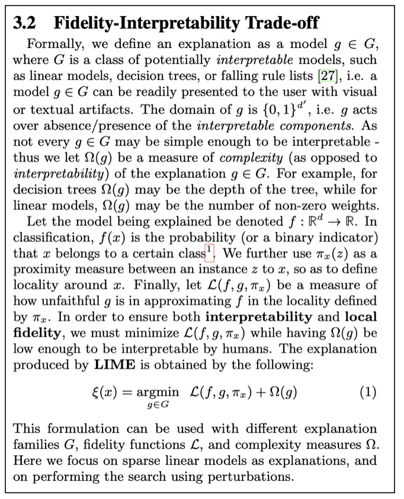

Black Box Model Assessment
Agenda
Goal: Study Model Agnostic Interpretability Methods. These should help to explain any type of ML Models.
Partial Dependence Plot (PDP)
Local Interpretable Model-agnostic Explanations (LIME)
SHAP (SHapley Additive exPlanations)
Examples and materials from Molnar’s book: https://christophm.github.io/interpretable-ml-book/
Bike Rentals (Regression)
This dataset contains daily counts of rented bicycles from the bicycle rental company Capital-Bikeshare in Washington D.C., along with weather and seasonal information. The goal is to predict how many bikes will be rented depending on the weather and the day. The data can be downloaded from the UCI Machine Learning Repository.
Here is the list of features used in Molnar’s book:
- Count of bicycles including both casual and registered users. The count is used as the target in the regression task.
- The season, either spring, summer, fall or winter.
- Indicator whether the day was a holiday or not.
- The year, either 2011 or 2012.
- Number of days since the 01.01.2011 (the first day in the dataset). This feature was introduced to take account of the trend over time.
- Indicator whether the day was a working day or weekend.
- The weather situation on that day. One of: clear, few clouds, partly cloudy, cloudy mist + clouds, mist + broken clouds, mist + few clouds, mist light snow, light rain + thunderstorm + scattered clouds, light rain + scattered clouds heavy rain + ice pallets + thunderstorm + mist, snow + mist
- Temperature in degrees Celsius.
- Relative humidity in percent (0 to 100).
- Wind speed in km per hour.
Partial Dependence Plot (PDP)
Shows the marginal effect one or two features have on the predicted outcome of a machine learning model (J. H. Friedman 2001).

Partial Dependence Plot (PDP)
High level idea: marginalizing the machine learning model output over the distributions of the all other features to show the relationship between the feature we are interested in and the predicted outcome.
Partial Dependence Plot (PDP)
Pros
- Intuitive
- Interpretation is clear
- Easy to implement
Cons
- Assume independence among features
- Can only show few features
- Hidden heterogeneous effects from averaging
Local Interpretable Model-agnostic Explanations (LIME)
Training local surrograte models to explain individual predictions
https://arxiv.org/pdf/1602.04938.pdf
Local Interpretable Model-agnostic Explanations (LIME)
The idea is quite intuitive.
First, forget about the training data and imagine you only have the black box model where you can input data points and get the predictions of the model. You can probe the box as often as you want. Your goal is to understand why the machine learning model made a certain prediction. LIME tests what happens to the predictions when you give variations of your data into the machine learning model.
LIME generates a new dataset consisting of perturbed samples and the corresponding predictions of the black box model.
On this new dataset LIME then trains an interpretable model, which is weighted by the proximity of the sampled instances to the instance of interest. The interpretable model can be anything from the interpretable models chapter, for example Lasso or a decision tree. The learned model should be a good approximation of the machine learning model predictions locally, but it does not have to be a good global approximation. This kind of accuracy is also called local fidelity.
https://christophm.github.io/interpretable-ml-book/
Local Interpretable Model-agnostic Explanations (LIME)
https://arxiv.org/pdf/1602.04938.pdf
Local Interpretable Model-agnostic Explanations (LIME)
Algorithm
- Pick an input that you want an explanation for.
- Sample the neighbors of the selected input (i.e. perturbation).
- Train a linear classifier on the neighbors.
- The weights on the linear classifier is the explanation.
Local Interpretable Model-agnostic Explanations (LIME)
Random forest predictions given features x1 and x2.
Predicted classes: 1 (dark) or 0 (light).
Local Interpretable Model-agnostic Explanations (LIME)
Instance of interest (big yellow dot) and data sampled from a normal distribution (small dots).
Local Interpretable Model-agnostic Explanations (LIME)
Assign higher weight to points near the instance of interest. I.e., \(weight(p) = \sqrt{\frac{e^{-d^2}}{w^2}}\) where \(d\) is the distance between \(p\) and the instantce of interest, and \(w\) is the kernel width (self-defined).
Local Interpretable Model-agnostic Explanations (LIME)
Use both the samples and sample weights to train a linear classifier.
Signs of the grid show the classifications of the locally learned model from the weighted samples. The red line marks the decision boundary (P(class=1) = 0.5).
The official implementation uses a Ridge Classifier as the linear model for explanation.
Local Interpretable Model-agnostic Explanations (LIME)
Let us look at a concrete example. We go back to the bike rental data and turn the prediction problem into a classification: After taking into account the trend that the bicycle rental has become more popular over time, we want to know on a certain day whether the number of bicycles rented will be above or below the trend line. You can also interpret “above” as being above the average number of bicycles, but adjusted for the trend.
First we train a random forest with 100 trees on the classification task. On what day will the number of rental bikes be above the trend-free average, based on weather and calendar information?
The explanations are created with 2 features. The results of the sparse local linear models trained for two instances with different predicted classes:
Local Interpretable Model-agnostic Explanations (LIME)
Pros
- Explanations are short (= selective) and possibly contrastive.
- we can control the sparsity of weight coefficients in the regressions method.
- Very easy to use.
Cons
- Unstable results due to sampling.
- Hard to weight similar neighbors in a high dimensional dataset.
- Many parameters for data scientists to hide biases.
SHAP (SHapley Additive exPlanations)
Examples and materials from Molnar’s new book: https://christophmolnar.com/books/shap/
SHAP (Lundberg and Lee 2017a) is a game-theory-inspired method created to explain predictions made by machine learning models. SHAP generates one value per input feature (also known as SHAP values) that indicates how the feature contributes to the prediction of the specified data point.
A Short History of Shapley Values and SHAP
- 1953: The introduction of Shapley values in game theory (by Lloyd Shapley).
- 2010: The initial steps toward applying Shapley values in machine learning
- original paper contained NO code!
- 2017: The advent of SHAP (by Lundberg and Lee), a turning point in machine learning.
Theory of Shapley Values
Who’s going to pay for that taxi?
Alice, Bob, and Charlie have dinner together and share a taxi ride home. The total cost is $51. The question is, how should they divide the costs fairly?

Theory of Shapley Values
The marginal contribution of a player to a coalition is the value of the coali- tion with the player minus the value of the coalition without the player. In the taxi example, the value of a coalition is equal to the cost of the ride as detailed in the above table. Therefore, the marginal contribution of, for instance, Charlie to a taxi already containing Bob is the cost of the taxi with Bob and Charlie, minus the cost of the taxi with Bob alone.
Theory of Shapley Values

Theory of Shapley Values
How to average these marginal contributions per passenger?
One way to answer this question is by considering all possible permutations of Alice, Bob, and Charlie. There are 3! = 3 * 2 * 1 = 6 possible permutations of passengers:
- Alice, Bob, Charlie
- Alice, Charlie, Bob
- Bob, Alice, Charlie
- Charlie, Alice, Bob
- Bob, Charlie, Alice
- Charlie, Bob, Alice
We can use these permutations to form coalitions, for example, for Alice.
Theory of Shapley Values
In two of these cases, Alice was added to an empty taxi, and in one case, she was added to a taxi with only Bob. By weighting the marginal contributions accordingly, we calculate the following weighted average marginal contribution for Alice, abbreviating Alice, Bob, and Charlie to A, B, and C:

Theory of Shapley Values
for Bob:

for Charlie:

Calculating Shapley values

The Shapley value is the weighted average of a player’s marginal contribu- tions to all possible coalitions.
The axioms behind Shapley values
Efficiency: The sum of the contributions must precisely add up to the payout.
Symmetry: If two players are identical, they should receive equal contributions.
Dummy or Null Player: The value of a player who doesn’t contribute to any coalition is zero.
Additivity: In a game with two value functions, the Shapley values for the sum can be expressed as the sum of the Shapley values.
These four axioms ensure the uniqueness of the Shapley values.
From Shapley Values to SHAP
Consider the following scenario: You have trained a machine learning model \(f\) to predict apartment prices.

From Shapley Values to SHAP
We want to evaluate the effort of cat-banned

From Shapley Values to SHAP
We want to evaluate the effort of cat-banned

Interpreting SHAP values
The Shapley value can be misinterpreted. The Shapley value of a feature value is not the difference of the predicted value after removing the feature from the model training. The interpretation of the Shapley value is: Given the current set of feature values, the contribution of a feature value to the difference between the actual prediction and the mean prediction is the estimated Shapley value.
The Shapley value is the wrong explanation method if you seek sparse explanations (explanations that contain few features). Explanations created with the Shapley value method always use all the features. Humans prefer selective explanations, such as those produced by LIME. LIME might be the better choice for explanations lay-persons have to deal with.
(From Molnar’s book)
SHAP (SHapley Additive exPlanations)
Cons
- A lot of computing time
- Not sparse explanations (every feature is important)
SHAP (SHapley Additive exPlanations)

SHAP limitations

http://proceedings.mlr.press/v119/kumar20e/kumar20e.pdf